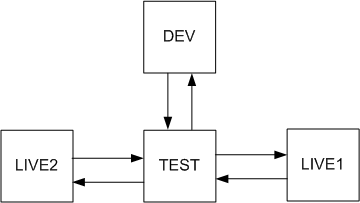
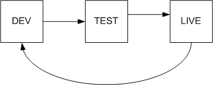
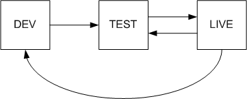

Bi-directional content staging
You can set up bi-directional content staging between servers – the servers are not exclusively source or target servers, and can transfer changes both ways. The advantage of bi-directional configurations is that you can make changes not only on the source server, but also on the other servers. The changes are then transferred to the rest of the servers.
There are two types of bi-directional content staging, depending on the number of servers between that you want to synchronize:
Simple - used for synchronization between 2 servers only
Advanced - for synchronization between more than 2 servers
Simple bi-directional staging
If you want to perform content staging bi-directionally between two servers, you need to configure both servers as a source and a target server at the same time, as described in Configuring content staging.
Additionally, you need to prevent synchronization loops. Perform the following on both servers:
Open the Settings application.
Select the Versioning & Synchronization -> Staging category.
Disable the Log staging changes setting.
Click Save.
This ensures that the servers do not attempt to synchronize changes that are the result of staging from the other server.
Advanced bi-directional staging
Bi-directional content staging is also possible on more than two servers. In this case, the data of each transferred staging task contains a list of servers where the task was already processed. This prevents redundant staging tasks from being logged for servers where the changes have already been performed.
The rule is that you need only one path between any two servers in both directions. The following figures show examples of supported server topologies. The rectangles represent servers, and the arrows indicate the flow of content staging synchronization tasks.
Star topology

Circle topology

Other topologies are not supported. The following diagram shows an unsupported environment – there are two paths from the LIVE server to the TEST server, which breaks the rule.
Unsupported topology (example)

Configuring advanced bi-directional staging
The following steps describe how to configure bi-directional staging for three servers using a star topology – a development, test and live server.
For all servers that you want to include in the bi-directional staging:
Open the Settings application.
Select the Versioning & Synchronization -> Staging category.
Configure the settings for both source and target staging.
Configuring the Development server
Edit the web.config file of the application.
Add the following key into the appSettings section:
<add key="CMSStagingServerName"value="Dev"/>In the Kentico administration interface, open the Staging application.
Select the Servers tab and click New server.
Configure the new server to target the Test server.
Set the Server code name to Test, which is the value that you will use to identify the test server in the web.config.
Configuring the Test server
Edit the web.config file of the application.
Add the following key into the appSettings section:
<add key="CMSStagingServerName"value="Test"/>In the Kentico administration interface, open the Staging application.
Select the Servers tab and click New server.
Configure the new server to target the Dev server.
Set the Server code name to Dev, which identifies the development server.
Create another server.
Configure the new server to target the Live server.
Set the Server code name to Live, which is the value that you will use to identify the live server in the web.config.
Configuring the Live server
Edit the web.config file of the application.
Add the following key into the appSettings section:
<add key="CMSStagingServerName"value="Live"/>In the Kentico administration interface, open the Staging application.
Select the Servers tab and click New server.
Configure the new server to target the Test server.
Set the Server code name to Test, which identifies the test server.
You have now set up bi-directional staging between three servers.
Setting staging server names for web farms
If any of the servers within your staging topology run in a web farm environment with multiple servers (Kentico instances), you need to set the CMSStagingServerName web.config key to the same value for each instance within the web farm.
For example, if your Live server in the sample scenario above consists of multiple Kentico instances running in a web farm, set the CMSStagingServerName key's value to Live on all web farm instances.